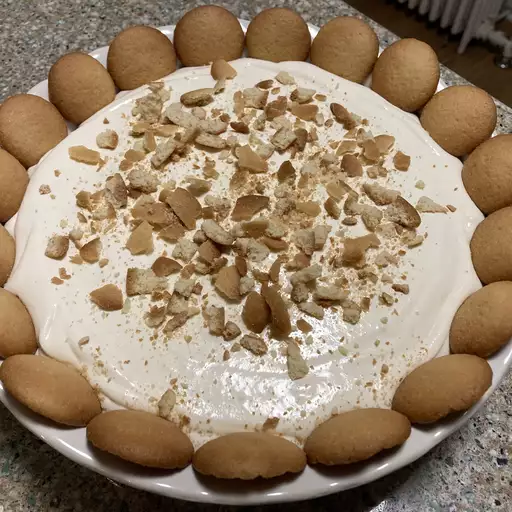

Banana Pudding

Banana Pudding with all the classic ingredients to make this recipe super easy to enjoy.
Banana pudding is a luscious dessert that layers velvety vanilla custard, ripe bananas, and light-as-air vanilla wafers,
all crowned with a fluffy meringue or whipped cream topping.
Whether topped with meringue that's gently browned in the oven or a dollop of softly whipped cream,
banana pudding is a delightful blend of textures and flavors that's both nostalgic and endlessly satisfying.
Ingredients
- 1 Pkg Creamcheese, room temperature
- 1 Can Sweetened Condensed Milk
- 1 Pkg Instant Vanilla Pudding Mix
- 3 Cups Milk
- 1 Teaspoon Vanilla Extract
- 1 Container Frozen Whipped Topping
- 1 Pkg Vanilla Wafers
- 4 Bananas, sliced
Steps
- Beat cream cheese in a large bowl until fluffy.
Beat in condensed milk, then pudding mix.
Gradually mix in cold milk until smooth, followed by vanilla. Fold in 1/2 of the whipped topping.
- Line the bottom of a 9x13-inch dish with vanilla wafers. Arrange sliced bananas evenly on top. Cover with pudding mixture.
Top with remaining whipped topping.
- Cover and chill in the refrigerator for at least 3 hours before serving.